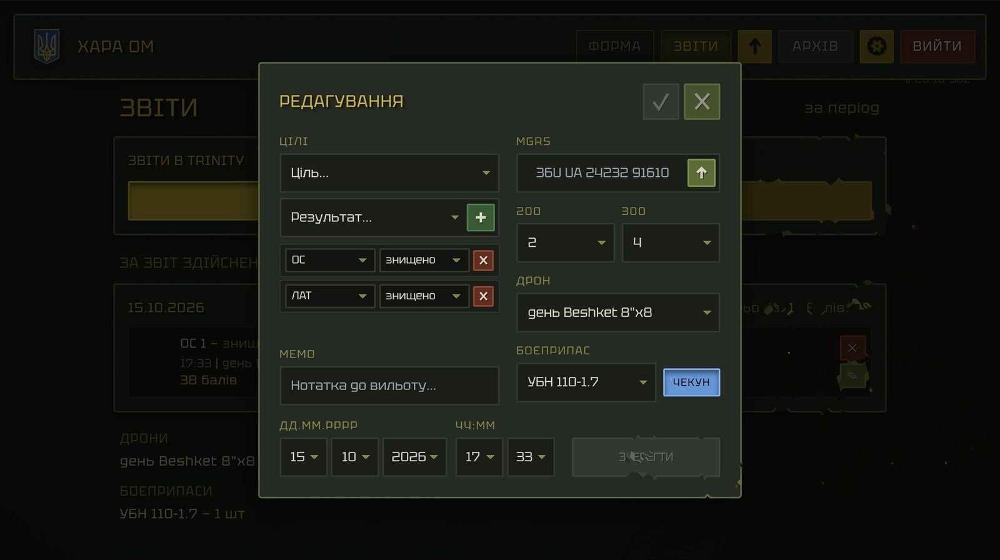

ХАРА ОМ
Інструкція користувача v.26.10-10
Тут написано, що натиснути, щоб щось зробити, і що після цього станеться. Координати, пошти й назви на знімках змінені.
- Записати виліт
- Почати новий звіт
- Виправити або видалити виліт
- Подивитись, що зроблено за день, звіт чи виїзд
- Отримати підсумки й доповідь
- Заархівувати звіт
- Подивитись архів: вильоти, цілі, статистика, таблиця
- Звірити з файлом верифікатора
- Якщо немає мережі
- Списки, ціни, доступ, інша таблиця
- Корисні дотики
1. Записати виліт
- Відкрий ФОРМА (верхнє меню). Час вильоту береться поточний — змінити його можна потім у редагуванні.
- Вибери ДРОН і БОЄПРИПАС (7). Вони обов’язкові. Якщо вони такі самі, як у минулому вильоті, натисни ПОПЕРЕДНІЙ — обидва підставляться самі.
- Встав координату MGRS (5): надрукуй або натисни стрілку в кінці поля — вона вставить координату з буфера обміну.
- Вибери ціль і результат (4) (знищено, пошкоджено…) і натисни зелений +. Ціль з’явиться карткою нижче. Якщо цілей у вильоті кілька — повтори. Помилково додану видали червоним ✕ на її картці.
- Якщо ціль — ОС (особовий склад), впиши в 200 і 300 (6), скільки знищено й скільки пошкоджено. Для інших цілей ці поля не потрібні.
- Якщо була засідка, натисни ЧЕКУН (9) — вийде +1 бал до вильоту (лише коли є знищена або пошкоджена ціль).
- Натисни ДОДАТИ ЗАПИС (8).
Що буде: форма очиститься, виліт одразу з’явиться у ЗВІТАХ, а в таблицю піде у фоні. Поки він ще не в таблиці, його картка й номер помаранчеві; коли запишеться — з’явиться «ЗАПИСАНО». Якщо запис не вдався, під меню з’явиться смуга з помилкою, а виліт лишиться чекати — його запише стрілка вгору. ДОДАТИ ЗАПИС не спрацює, доки не додано хоч одну ціль (або не натиснуто ЧЕКУН) і не вибрано дрон та боєприпас.
2. Почати новий звіт
- На ФОРМІ натисни НОВИЙ ЗВІТ (1) і підтверди.
Що буде: почнеться наступний звіт (ПЕРШИЙ → ДРУГИЙ…). Нумерація вильотів і цілей у ньому починається з одиниці. Попередні звіти нікуди не діваються — вони лишаються у ЗВІТАХ.
Угорі форми видно ЗВІТ № — де ти зараз, і ВИЛІТ № — яким по рахунку буде наступний виліт у цьому звіті. Праворуч: за яку дату і який по рахунку за сьогодні виліт.
3. Виправити або видалити виліт — виправлення

ЗБЕРЕГТИ
123456789101112Виправити
- У ЗВІТАХ знайди картку вильоту й натисни на ній зелений олівець — відкриється вікно.
- Зміни, що треба: цілі (3, 4), координату (5), 200/300 (6), дрон (7), боєприпас (8), ЧЕКУН (9), дату й час (11).
- Якщо треба — напиши MEMO (10): нотатка до вильоту, видно на картці.
- Натисни ЗБЕРЕГТИ (12) або галочку (1). Закрити без збереження — хрестик (2) або натиск на темний фон поза вікном.
Що буде: картка оновиться. Поки правка не записана в таблицю, змінене поле світиться помаранчевим. Галочка й ЗБЕРЕГТИ тьмяні, доки нічого не змінено.
3. Виправити або видалити виліт — видалення
Стерти нотатку
- У вікні редагування натисни на напис MEMO — нотатка зітреться одразу.
- Стерлося помилково? Натисни кнопку зі стрілкою в полі — нотатка повернеться.
Видалити виліт
- На картці вильоту натисни червоний ✕ і підтверди.
Що буде: виліт зникне з підрахунків. Якщо мережі немає, картка лишається перекресленою — натисни на ній кругову стрілку, і видалення скасується. Після того, як зміна дійшла до таблиці, скасувати вже не вийде.
Виліт із минулого періоду
Вильоти з архіву редагуються в тому ж вікні (олівець на картці в АРХІВІ), але для цього потрібна мережа.
1✕ — видалити виліт.
2Олівець — редагувати виліт.
4. Подивитись, що зроблено за день, звіт чи виїзд — вибраний день
Коли вибрано звіт і день:
1Вибраний звіт.
2Вибраний день.
3Скільки вильотів і балів за цей день.
4Вильоти цього дня.
Що буде: при вході у ЗВІТИ відкривається поточний звіт; якщо в ньому ще немає вильотів — останній, де вони є.
Що можна зробити з карткою вильоту
- Один дотик по координаті, цілі, дрону чи БК — копіює це в буфер (з’явиться «СКОПІЙОВАНО»). Зручно вставити координату в карту.
- Подвійний дотик по картці — ставить позначку «!» на вильоті, щоб не загубити; ще один — знімає.
6. Заархівувати звіт
- Натисни шестерню в меню → АРХІВУВАТИ дата (1). Дата в назві — період, який зараз лежить у головній таблиці.
- Підтверди.
Що буде: поточний звіт переноситься в окремий архівний аркуш з назвою цього періоду. У АРХІВІ з’явиться нова кнопка періоду. Потрібна мережа; без неї кнопка тьмяна, а в підказці написано, чого бракує. Перед архівуванням запиши всі вильоти (стрілка вгору не повинна показувати число).
7. Подивитись архів — де які дані
- Відкрий АРХІВ. Кнопки періодів (2) стоять рамками по роках. Старіший рік — рамка ззаду (3): натисни на неї, щоб вивести наперед.
- Натисни кнопку періоду — він відкриється.
- Праворуч — кнопки: ПІДСУМКИ (4) — готовий текст; СТАТИСТИКА (5) — дрони, БК, результати, верифікація; ТАБЛИЦЯ (6) — цілі по днях; ВИЛЬОТИ (7) — картки вильотів; ЦІЛІ (8) — картки цілей. Повторне натискання ховає блок. ВИЛЬОТИ й ЦІЛІ вмикаються по одному.
Де які дані: період не вибрано — ті самі кнопки показують дані за всі періоди разом (картки лише для перегляду). Період вибрано — дані цього періоду. Слово АРХІВ (1) скидає вибір періоду. Без мережі працює все, що збережено на пристрої; «за період», ВЕРИФІКАЦІЯ й редагування потребують мережі.
8. Звірити з файлом верифікатора
- Шестерня → ВЕРИФІКАЦІЯ → вибери період. Старші роки — натисни жовту кнопку року, періоди розкриються.
- Якщо файл від верифікатора має зайві стовпці — натисни ПІДГОТУВАТИ ФАЙЛ: відкриється окрема сторінка, що чистить файл.
- Вибери файл верифікатора. Застосунок звірить його з вильотами цього періоду й покаже підсумок.
Що буде: у архівному аркуші з’являються оцінки та бали верифікатора. У АРХІВІ на картках видно статуси: ВЕРИФІКОВАНО, ЧАСТКОВО, ВІДХИЛЕНО, ЗАМІНЕНО, ДУБЛЮЮЧИЙ, НЕ ЗВІРЕНО. Підсумки й статистика починають показувати верифіковані бали. Звірення можна повторити — старі результати перепишуться. Потрібна мережа.
Якщо щось не лягло
- Шестерня → СЕРВІС: перелік рядків файлу, що не знайшли вильоту; вильоти, яких немає у файлі; вильоти з порожніми клітинками; підказки, що виправити в таблиці. Виправ у таблиці й повтори звірення.
8. Звірити з файлом верифікатора — де натискати
1Вікно звірення вибраного періоду: тут вибираєш файл верифікатора.
2Кнопка вибору файлу.
3Запуск звірення.
4Після звірення — підсумок: скільки рядків лягло, скільки ні.
5Закрити підсумок.
1ПІДГОТУВАТИ ФАЙЛ: вибери файл верифікатора.
2Познач колонки, які лишити.
3Якщо заголовки не збігаються — виправ їх.
4Збережи готовий файл і використай його у вікні звірення.
9. Якщо немає мережі
- Працюй як звичайно: додавай, виправляй, дивись звіти й архів, збережений на пристрої.
- Нові й змінені вильоти чекають у черзі. На стрілці вгору — число незбережених. Біля герба/назви пише «ОФЛАЙН».
- Коли з’явиться мережа — натисни стрілку вгору: усе запишеться в таблицю.
- Щоб навпаки завантажити свіже з таблиці — натисни герб у меню (якщо є незбережене, воно спершу запишеться).
Що не працює без мережі: архівування, верифікація, «за період» в АРХІВІ, редагування архівних вильотів, ДОСТУП. На вході без мережі є кнопка ПРОДОВЖИТИ ОФЛАЙН — відкриває застосунок з даними на пристрої.
1Герб — завантажити свіже з таблиці.
2Стрілка вгору (з числом незбережених) — записати чергу в таблицю.
10. Списки, ціни, доступ, інша таблиця — де натискати
1СПИСКИ: сторінка зі списками.
2Поле й перелік — вибери рядок, щоб працювати з ним.
3Додати або видалити рядок списку.
10. Списки, ціни, доступ, інша таблиця — де натискати
1«е бали»: пошук цілі.
2Знайдена ціль із ціною.
1ДОСТУП (ліворуч): поле з поштою, потім «+».
2Олівець — виправити рядок; ✕ — видалити.